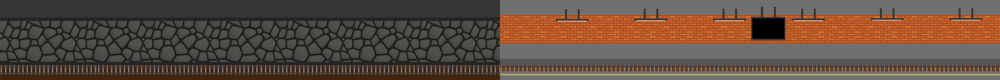
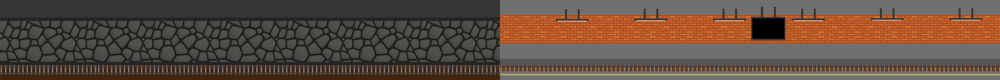

Operahuset i Oslo er Den Norske Opera & Balletts operahus i Bjørvika innerst i Oslofjorden. Det har adresse Kirsten Flagstads plass 1 etter operaens første sjef Kirsten Flagstad. Huset er tegnet av arkitekt- og designkontoret Snøhetta, som vant en arkitektkonkurranse i 2000. Det ble høytidelig åpnet 12. april 2008. Bygningen har fått mange priser, og er fredet av Riksantikvaren.
Togstasjonen er et knutepunkt hvor tog, trikk, T-baner og busser møtes, som gjør det til Norges største trafikk-knutepunkt hvor 150 000 er innom daglig. De fleste fjerntog og lokaltogene på Gjøvikbanen har Oslo S som sin endestasjon. Den er også en av Flytogets stasjoner, og halvparten av avgangene har Oslo S som start- og endestasjon. Samtlige lokaltog i Oslo-området betjener Oslo S.